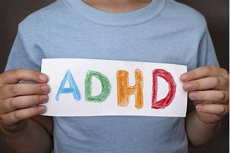

-
DEPRESSION
Depression is a pervasive and often misunderstood mental health condition that affects millions of people worldwide. Contrary to common misconceptions, depression is not merely a fleeting bout of sadness but a complex and persistent challenge that can significantly impact a person's life.
Learn more
-
LONLINESS
Loneliness is more than just the absence of company; it's a profound emotional state that can affect anyone, regardless of their social connections. It stems not only from physical isolation but also from a lack of genuine connection and understanding.
Learn more -
ADHD
ADHD, or Attention Deficit Hyperactivity Disorder, is a neurodevelopmental condition that goes beyond mere restlessness or difficulty focusing. It manifests as a unique way of experiencing the world, often characterized by impulsivity, hyperactivity, and challenges in maintaining attention.
Learn more